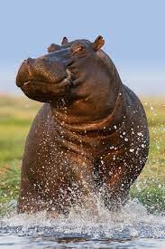

Henry the Hippo
Contact
- 702-853-0926
- 15693 Water Way
- henryhippo@gmail.com
- Harrisonburg, VA

Objective
Dedicated and experienced hippopotamus with a successful background in entrepreneurship within the ice cream industry. Seeking a fulfilling career transition into teaching, leveraging my passion for education, creativity & strong leadership skills.
Professional experience
1. Ice Cream Shop Owner
Hippo Ice Cream, Harrisonburg, VA
June 2018 - January 2024
- Founded and managed a thriving ice cream shop, demonstrating strong business acumen and leadership skills.
- Developed and implemented marketing strategies to enhance brand visibility and increase customer engagement.
- Fostered a positive and inclusive work environment, leading a team of employees with effective communication and teamwork.
- Introduced innovative and seasonal ice cream flavors, ensuring a unique and delightful customer experience.
- Managed day-to-day operations, including inventory control, financial management, and customer service.
- My Ice Cream
2. Teaching Assistant
Little Hipps, Orlando, FL
May 2020 - Current
- Assisted lead teachers in creating engaging lesson plans and classroom activities.
- Provided one-on-one support to students, addressing individual learning needs and fostering a positive learning environment.
- Collaborated with teachers and staff to organize and participate in school events and extracurricular activities.
- Teaching young hippos
Education
1. School of River Wisdom
Degree Earned: Bachelor of Aquatic Studies
Graduation Date: May, 2018
Courses:
- Advanced Mud Bath Techniques
- Riverbank Erosion Management
- Aquatic Flora and Fauna Appreciation
Certifications
- Professional Swimming Certification
- First Aid and CPR training
Skills
- Strong Leadership and Team Management
- Effective Communication and Collaboration
- Creativity and Innovation
- Customer Service Excellence
- Classroom Management
- Individualized Student Support
- Lesson Planning
- Organizational and Time Management
All content © 2024, Henry the Hippo and Ryan McAuley